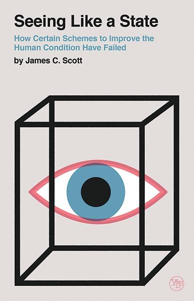
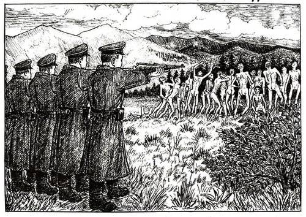
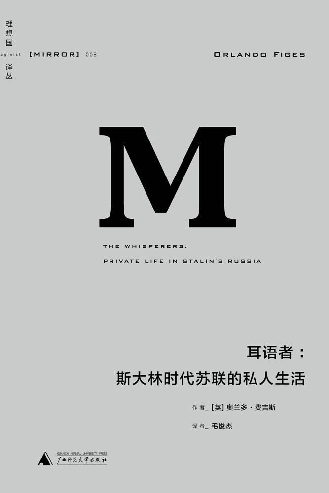

第三章 国家建构
刘瑜
可能性的艺术：比较政治学30讲
16. 国家能力越强越好吗？苏联往事
播放
00:00
进入全屏
画中画
打开弹幕
点击按住可拖动视频
16. 国家能力越强越好吗？苏联往事
00:00
25:18
大家好，我是刘瑜，欢迎来到《比较政治学》节目的第十六讲。
引言：国家能力越强大越好吗？
上期节目，我们讨论了为什么在比较政治学界，会出现“重新带回国家”的潮流，讲到了国家能力对于一个国家的稳定秩序、经济发展、公共服务等等都至关重要。
事实上，我发现，最近这些年，“国家能力”这个概念已经有了“万能化”的趋势了：一个国家经济为什么发展？因为国家能力。为什么民主质量不行？因为国家能力低下。为什么发生了战争？因为国家能力下降。为什么战争结束了？因为国家能力上升……有时候，国家能力低下被定义为“腐败”，用来解释经济落后；有时候国家能力低下又被定义为“经济落后”，用来解释腐败，等等。这就有点像犯罪学中的“童年阴影”了，每当一个离奇杀手出现，专家们就冒出来，从这个人童年的家庭关系说起，说得头头是道。
既然国家能力很重要，这几乎已经成为一个共识，那么，一个很自然的问题是：国家能力越强大越好吗？
1. 分析苏联的陨落，理解“国家能力”概念的限度
关于这个问题，我想从一个地球上已经消失的国家说起：苏联。
为什么要谈论“苏联”？因为苏联曾经是一个无比强大的国家，它曾是世界上两个超级大国之一，很多人甚至一度认为它将赶超美国，独霸天下。然而，就是这样一个风云一时的国家，在71年的生命之后，突然崩溃了，而且几乎是无声无息地崩溃了，仿佛掉进了历史的黑洞。或许，分析它的陨落，能帮助我们理解国家能力这个概念的限度。
1.1 衡量“国家能力”的三个重要指标
毫无疑问，无论从哪个角度来看，苏联的国家能力都曾经是非常强大的。尽管不同的学者常常用不同的尺度衡量国家能力，通常而言，有几个指标是最受公认的。一个是军队和警察的力量，也就是国家暴力垄断的能力；二是财税状况，也就是政府能把多少社会资源聚集到自己手里来。这两点，大家都容易理解，一个是枪杆子，一个是钱袋子，国家能力的两大支柱。
还有第三个，也是近年越来越受到学者们重视的一点，就是国家的信息能力，什么叫信息能力？简单来说，就是国家的“视力”——国家在多大程度上掌握了其疆域内人口、土地、资源的信息——别小看这种信息能力，你如果都不知道自己国家有多少人、谁去世了、谁出生了，你怎么征兵？你如果不知道自己国家有多少土地、公司、矿产，你又怎么征税？所以，枪杆子和钱袋子很大程度上依赖于国家的信息能力。
历史上比较强大的国家，通常也是土地册、人口普查和登记，做得比较好的国家。学者James C. Scott写过一本书，叫做“Seeing Like a State”，在中国被翻译成《国家的视野》，这本书表达的也是类似的意思。

可以说，强国家就是政府视力2.0的国家，弱国家就是高度近视的国家。强国家能清清楚楚地看到自己疆域上所发生的一切，一切人口、一切生老病死、一切经济活动、一切武装力量，到21世纪，甚至还包括几亿人里每一个人的脸型、指纹、体温；而弱国家的政府，作为高度近视患者，它眼中的世界是模模糊糊的，又因为模糊，它走起路来也是跌跌撞撞的。所以，信息能力也是国家能力中重要的一条。
1.2 强大的暴力垄断能力：苏联的军队与警察力量
那么，我们用这几个指标来看看苏联。
首先，苏联的军队和警察力量是毋庸置疑的。直到今天，俄罗斯，也就是前苏联解体后的主要成员国，仍然是世界上核弹头最多的国家。2018年，它的GDP只有美国的1/12，但是它的核弹头数量仍然超过了美国，显然，这是前苏联的政治遗产之一。警察就更不用说了，大家都知道，苏联不但有警察，还有“秘密警察”，也就是著名的克格勃系统。你们可能听说过一个著名的苏联笑话，说苏联人在一起谈论什么叫幸福？最后的结论是，幸福就是当克格勃半夜敲门、宣布“伊万同志、你被捕了”的时候，你惊喜地告诉他：“对不起，伊万住在隔壁。”
正是因为军队警察力量强大，苏联政府在其国土上的暴力垄断能力无人匹敌。在其71年的历史上，除了最开始和白军的内战，以及二战，苏联几乎没有什么大规模的暴力冲突。莫斯科的大街上绝没有墨西哥式的毒品黑帮；阿富汗式的军阀割据也是闻所未闻；至于叛乱分子、反革命分子，那是有一个杀一个，甚至可以说，有一个杀十个。
我们知道，哪怕是美国，世界第一强国，刺杀总统这样的事情也是屡见不鲜，甚至在纳粹德国，也发生过“刺杀希特勒”的行动，但是在苏联历史上，尤其是斯大林时期，有过刺杀最高领导人的事情吗？反正我是没有听说过。别说刺杀斯大林，就是斯大林死了，身边的人居然很长时间都不敢过去检查他是不是真的死了。前两年有个电影《斯大林之死》，大家可能听说过，就是以黑色喜剧的方式表现这个事情。可以说，苏联整个国家鸦雀无声的程度，真的是“一根针掉在地上都可以听见”。
大家应该都听说过古拉格群岛，苏联用来流放各种犯人尤其是政治犯的地方。我出于好奇曾经专门去查过，在古拉格的历史上，有没有出现过有组织的武装反抗？毕竟，我们都听说过一个说法，把俄罗斯称为“战斗的民族”，那么，这个战斗的民族在古拉格群岛有没有“战斗”过？答案是：没有。在古拉格集中营几十年的历史上，没有出现过有组织的反抗。
唯一一次勉强可以称为有组织的反抗，还是集中营的几个看守组织的，是一次逃亡行动，参与者大约有一两百人。
根据《古拉格：一部历史》这本书，这次逃亡的结局是这样的，“最后的决战发生在1月31号，整整打了一天一夜。当民兵逼近时，一些暴动者开枪自杀。内务部派人围捕森林里的残余暴动者，将他们逐一射杀。尸体被堆放在一起，民兵将其肢解，然后拍照留念。从档案里的照片来看，变形的尸体浑身是血地躺在雪地里。没有人知道尸体被埋在什么地方。”所以，这就是集体逃亡的下场，这就是苏联的国家能力。即使是传奇的“战斗民族”，政府面对社会，可以说是“如入无人之境”。

图片来源：Drawings from the Gulag，by Danzig Baldaev
1.3 整个“蛋糕”都是国家的：苏联的财税能力
再看苏联的财税能力。这一点就更不用说了。政府的税收能力，通常是指政府能从整个社会生产的“蛋糕”中切分多少，也就是能收百分之多少的税。一般来说，政府往往需要费劲九牛二虎之力，才能说服民众多交一点税，有时候说服不了，还可能是搬起石头砸自己的脚。像当年大英帝国，想说服北美民众交点印花税、茶叶税，结果直接就被北美人民用扫把赶回了大西洋对岸。
但是，苏联不用操心这个问题，为什么？它直接把经济全部改造成了国有经济，整个“蛋糕”都是国家的，所以，问题不再是国家能从社会中切割多少“蛋糕”，而是社会能从国家手里分到多少“蛋糕”。
这也部分解释了，为什么苏联时期几乎没有有组织的反抗。当你的工作是国家给的、你的住房是国家给的、你孩子上的学校是国家的、你的粮票是国家的、甚至你出门上个火车都要国家开的介绍信，你怎么反抗？你反抗就相当于金鱼拼命跳出鱼缸，你以为自己是在自救，其实你是在自杀。
1.4 国家“视力”2.0：苏联政府的信息能力
再来看看苏联政府的信息能力。
经济信息就不用说了——既然是计划经济，政府必然要全方位地掌握关于生产、消费的信息。人口的信息也不用说，苏联时期有一种证件叫做Propiska，既是户口，又是迁徙证，又是某种意义上的工作许可证，通过这样一个系统，政府对每个人的位置与流动可以说有显微镜般的知识。
更重要的是，通过鼓励所谓积极分子，政府还塑造了一个庞大的相互告发系统，使得政府能清清楚楚地掌握着每个人的私生活信息。这一点，大家有兴趣的话，可以去读一本叫做《耳语者》的书，是一个英国历史学家Orlando Guy Figes写的，内容是关于苏联时期家庭生活。

其实，这本书的书名就足够说明问题了：耳语者，英文叫做The
Whisperers，也就是窃窃私语的人。为什么要“窃窃私语”？因为没有人敢大声说话，每个人都怕自己所说的话会被亲友或者邻居告发，哪怕所说的话无关政治、更不反动，但是，无名的恐惧始终存在，就像一把利剑悬在头顶，你不知道它什么时候会掉下来。
1.5 苏联特色：国家的思想改造能力
强大的军事能力、财政能力、信息能力，还不是全部，在苏联时期，最具苏联特色的，恐怕还是国家的思想改造能力。
苏联时期的洗脑，不仅仅是依靠暴力威胁或者宣传口号，它有一整套的仪式、程序、配方，让活泼泼一个人走进去，然后像个机器人一样被吐出来。出来之后，就成了所谓的“社会主义新人”，说着同样的语言，散发着同样的气质，拥有同样的审美，甚至穿着一样的衣服，总之，拥有了一种“集体人格”。
这种思想改造的成功，大概就是为什么在希特勒的德国，还会发生军官们联合刺杀希特勒的行动，但是在斯大林的苏联，哪怕被斯大林亲手送到了断头台上，革命将领们还在热泪盈眶地高呼“斯大林万岁”。
2. 国家能力超强的苏联，为何在短暂的生命后崩溃了？
好，现在我们清楚了，苏联作为一个国家，具有无与伦比的国家能力。然而，这样一个无所不能的国家，短短71年之后，坍塌了、消失了。为什么？
2.1 是美国或戈尔巴乔夫搞垮了苏联吗？
关于这个问题，我们经常听到一种说法，叫做“苏联被美国给拖垮了”。这个说法显然不够有说服力，最简单的反问是：两国竞争，为什么被拖垮的是苏联、而不是美国？如果苏联真的像一些人认为的那样，代表了未来，那么被拖垮的理应是美国，对不对？
还有一个常见的解释，是“苏联被戈尔巴乔夫给搞垮了”。这个说法同样站不住脚。就算戈尔巴乔夫是个坏人，想搞垮苏联，问题是：“人民群众”怎么就答应了呢？如果民众“不答应”，他一个人无论如何也搞不垮一个国家，对不对？
在苏联崩溃的过程中，无论是政权的倒台、还是各个共和国的独立，都没有遭遇民意的大规模抵抗。哪怕沙皇政权当年倒台的时候，都还有几十万人加入白军，为旧政权而战，但是苏联政权崩溃的时候，绝大多数民众的态度基本上就是“慢走、不送”。所以，把责任推到戈尔巴乔夫一个人身上，也是说不通的。
2.2 苏联瓦解的真正原因：国家能力的过于强大
苏联的瓦解，真正的原因，在我看来，恰恰是其国家能力过于强大。
因为过于强大的国家能力，这个国家失去了刹车机制，无法调整自己的方向，导致它一条道开到了悬崖。因为过于强大的国家能力，它消灭了社会，从而失去了改革所需要的反馈机制和压力机制，最后只能靠“死机”来实现“重启”。因为过于强大的国家能力，它走向了过度扩张，军事上的、经济上的、政治上的过度扩张，最后耗尽了资源、也耗尽了民心。总之，无节制的国家能力导致过于庞大、沉重的政府，最后这个国家被自身的重量所压垮。
为什么这么说？为什么说苏联的崩溃恰恰是因为“国家能力过于强大”？这可以从几个方面来看。
2.3 苏联的秩序：暴力的高度垄断与过度扩张
首先，我们来看苏联的秩序。的确，在苏联，暴力是高度垄断的，不存在当代墨西哥式的分散暴力，更看不到任何力可敌国的武装叛军。但是，当社会的自组织能力完全被抹杀，国家和社会之间的实力对比完全不对称，结果是什么？结果是社会失去了谈判能力，成为任人宰割的鱼肉。
苏联1932年左右的农业集体化过程中，因为强制性的过度粮食征收，加上对人口流动的限制，乌克兰发生了惨烈的饥荒，导致3-7百万人死亡。政治迫害更是举世闻名。据保守的估计，从斯大林接管党权的1928年到他去世的1953年，约有2500万人受到政权的迫害，占人口大约八分之一。仅在1937和1938年，至少有68万人因为“危害国家罪”被枪决。甚至党内高干也不能幸免。1934年苏共17大选出的139名中央委员中，102人遭枪决。
这就是苏联式“秩序”的代价。我们可以想象，在这些冷冰冰的数字后面，有多少泪水、挣扎、恐惧与绝望。所以，回到我们刚才提出的那个问题，当苏联走向解体的时候，为什么人民群众就“答应了”呢？答案恐怕就在这些挣扎和恐惧中。
暴力的过度扩张不仅仅是在苏联国内，也向国外蔓延。大家可能都听说过“布拉格之春”，1968年，面对其卫星国捷克的民众抗议，苏联一口气把两千个坦克给开了过去，扑灭了捷克革命的火苗。
图片来源：https://cn.nytimes.com/world/20180821/prague-spring-communism/zh-hant/
“布拉格之春”只是类似霸权主义的一个例子，无论是东德1953年的风波，还是匈牙利1956年风波，它们难以掀起巨大的风浪，很大程度上都是因为苏联的军事威胁。
但是，苏联最严重的一次过度扩张，则是1980年入侵阿富汗。某种意义上，阿富汗对于苏联，就像是越南对于美国，一个超级大国踏进一个弱小国家，以为自己可以轻松搞定，结果是自己给自己挖了一个坑，怎么也跳不出来了。关于这一点，后面讲到阿富汗的时候，我还会再涉及。
2.4 苏联经济：经济结构扭曲与“掠夺型国家”形成
再来看苏联经济。超强的国家能力有没有带来苏联的经济发展？有。至少在一个阶段内如此。斯大林上台后不久，就提出要用10年的时间去实现西方国家100年的工业化成果。于是，政府利用其强大的动员能力发动了经济引擎。1928-1940年，苏联的经济增长率是年均5.8%，1950-1960年是5.7%，所以赫鲁晓夫在台上的时候，才会宣布苏联1970年人均GDP将要赶超美国。不但他这么自信，当年西方不少政治家和学者也认为苏联赶超美国指日可待。
但是，从60年代中期开始，苏联经济发展开始减速。1960年代经济增速跌至百分之4点几，1970年代跌至百分之2点几，到80年代，只剩下了百分之1点几，而它的全要素生产率已经跌到了负数。
为什么苏联的经济发展会先加速、后减速？同样是因为国家能力的过度拉伸。简单来说，第一，过强的国家能力扭曲了经济结构；第二，“发展型国家”一旦过度，就成了“掠夺型国家”。因为国家指哪打哪，苏联经济模式被扭曲，重投资、轻消费；重军工，轻生活；重模仿，轻创新；这一系列扭曲的后果就是经济发展失去了后劲，陷入“短缺经济”的陷阱。
而且，在全盘的计划经济和国有经济下，整个“蛋糕”都是国家的，对普通人来说，干多干少、干好干坏都一样，他们为什么要积极生产和创新？在所有的苏联笑话中，我印象最深的一条，是以一个工人的视角说的，他说：We
pretend to work, and they pretend to
pay。“我们假装工作，他们假装发工资。”短短一句话，道尽了苏联经济的全部问题：劳动者根本没有动力生产，而政府发的钱什么也买不到。
2.5 苏联的思想改造：向人性开战
再来看苏联的思想改造。的确，苏联一度成功地改造了无数人的头脑，但是，这种成功同样是过眼云烟式的。为什么？因为这种思想改造的核心，是号召人们为了集体放弃个体、为了国家放弃家庭、为了理想放弃利益、为了信仰放弃情感……可以说，它是向人性开战。
人性是什么？人性是复杂，是多变，是魔鬼和天使混合体。而思想改造是什么？是要消灭复杂，消灭变化，让人类完全变成天使。这可能成功吗？不可能。如果要强行把现实按到理想中去，结果就是假大空。这就像吹气球，你可以把一个普通的气球吹到西瓜那么大，但是再吹下去，它随时就可能爆破。
《耳语者》里面，有一个情节我非常难忘。里面讲到一个所谓的反革命教师，他被枪毙后，他的遗孀和孩子为了生活而投奔这个教师的妈妈，也就是孩子的奶奶家。但是，奶奶家明明有两层楼的房子，却拒绝收容他们，甚至不愿给长途跋涉的一家人一口饭吃，他们只好在村子里租了一个小房子住。而在他们住在村子里的15年里，奶奶家的亲戚从来不和他们来往。这个孩子后来回忆说：“最痛苦的是，看到他们走过我们的街道——哪怕周围肯定没有人监听——他们仍然不跟我们说话，甚至连一声招呼都不打。”人际关系如此的扭曲，连奶奶都不再怜惜孙女，或许能证明思想改造的成功，但是，比国家更强大的是人性。
人们渴望亲情、渴望友谊、渴望舒适、渴望美……或许人们会因为理想的感召而暂时放下这些渴望，但是，最终，人类通过几百万年进化出来的道德本能、情感本能、求生本能，会在政治的潮起潮落后重新浮出水面。
结语：国至强则易断
所以，回到最开始那个问题：国家能力越强大越好吗？显然，并非如此。或许，国家能力和治理绩效之间存在一个“倒U型”的关系：在一个区间里，强大的国家能力有助于经济发展、公共服务和政治秩序，但是过了某个点之后，国家则可能因为失去任何缰绳而变成破坏性的力量。
经济学者Daron Acemoglu在《狭窄的通道》这本书里表达过类似的看法，他用的词叫“被缚的利维坦 ”。什么意思呢？他说国家状态有三种：一种是国家缺失，一种是国家无比强大，第三种则是“被缚的利维坦”。没有利维坦就不会有秩序，但是利维坦过于强大又可能反噬社会，只有“戴上镣铐的利维坦”，就像被套上缰绳的马匹一样，既能干活，又不会随意踩坏庄稼。
”。什么意思呢？他说国家状态有三种：一种是国家缺失，一种是国家无比强大，第三种则是“被缚的利维坦”。没有利维坦就不会有秩序，但是利维坦过于强大又可能反噬社会，只有“戴上镣铐的利维坦”，就像被套上缰绳的马匹一样，既能干活，又不会随意踩坏庄稼。
”。什么意思呢？他说国家状态有三种：一种是国家缺失，一种是国家无比强大，第三种则是“被缚的利维坦”。没有利维坦就不会有秩序，但是利维坦过于强大又可能反噬社会，只有“戴上镣铐的利维坦”，就像被套上缰绳的马匹一样，既能干活，又不会随意踩坏庄稼。
其实，苏联的故事何止发生在苏联。历史上，有过许多类似的情节：一个强大的国家走向过度扩张、最后因为过度拉伸而脆断。中国历史上的秦朝、隋朝，蒙古帝国，日本帝国，德意志第三帝国，红色高棉时期的柬埔寨……国家建构都可以说登峰造极。但是，当扩张变成过度扩张，河流变成洪流，细雨变成暴雨，国家能力就成为一种诅咒。
不奇怪的是，这些国家都有两个共同点，一个是强大，另一个则是短暂。大一统的秦朝只存在了14年，隋朝只存在了38年，德意志第三帝国只存在了12年，红色高棉执政只有4年。相比之下，苏联还算是长寿的了。当然，在历史的长河中，71年也不过是昙花一现。
显然，这些国家的短暂并非偶然，水至清则无鱼，国至强则易断，在短暂和强大之间，或许存在着一种悲剧性的联系。当一个国家所向披靡，失去制约，或许没有人可以战胜它，但是，它可以成为自己最强大的敌人。
好，今天就讲到这里，感谢收听，我们下次再见！